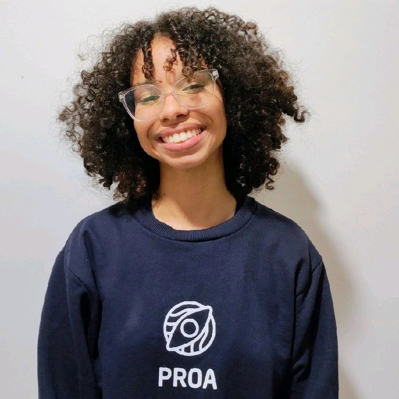

Olá, Tudo bem?
Me chamo Júlia Coelho da Silva e atualmente estou me aprofundando no desenvolvimento mobile, com foco na criação de aplicativos Android utilizando Kotlin e Android Studio com Jetpack Compose. Além disso, desenvolvo protótipos de baixa, média e alta fidelidade no Figma, integrando design e funcionalidade para oferecer experiências para usuários excepcionais.
Minha jornada profissional começou em 2023 na Concentrix, onde atuei na área de Medicina do Trabalho, auxiliando nos exames Admissionais, Periódicos e Demissionais. Essa experiência me proporcionou habilidades valiosas em comunicação, organização e atenção aos detalhes. Atualmente, estou em busca de oportunidades para aplicar meus conhecimentos em desenvolvimento mobile e design de interfaces, contribuindo para a criação de soluções digitais inovadoras e centradas pensando no usuário.
Mapa de Carreira
Desenvolvedor Júnior
Logo após o Instituto Proa, desejo me aprofundar na área de Desenvolvimento Mobile, atuando em desenvolvimento de aplicativos (back-end e/ou front-end) e/ou prototipagem (baixa, média e alta fidelidade).
Soft Skills exigidas para essa carreira:
- Trabalho em Equipe.
- Organização, Paciência e Resiliência.
- Aprendizado Técnico ágil.
- Resolução de problemas.
- Conhecimento Básico/Intermediário.
- Criatividade.
Roadmap de Aprendizado:
- Kotlin
- Android SDK
- Figma
- Jetpack Compose
- Android Studio
- Intellij
Desenvolvedor Pleno
Conhecimento avançado técnico em criação de aplicativos (front-end e back-end), construção de sistemas e estruturas mobile (android + IOS). Estruturar bancos de dados com código limpo, organizado e de fácil manutenção.
Soft Skills exigidas para essa carreira:
- Liderança de Equipe.
- Organização e Flexbilidade.
- Comunicação Técnica.
Roadmap de Aprendizado:
- Swift
- Kotlin
- AWS Certified Database
- Android Studio
- Xcode
- Intellij
- Jetpack Compose
Desenvolvedor Sênior (IOS + ANDROID + CYBERSECURITY)
Liderar juniors para projetos mobile Android e iOS. Priorizar a segurança dos sistemas por meio de práticas de cibersegurança.
Soft Skills exigidas para essa carreira:
- Liderança Técnica.
- Visão estratégica (escolher tecnologias seguras).
- Tomada de decisão para soluções de segurança.
- Priorização com foco em segurança e performance.
Roadmap de Aprendizado:
- SSL/TLS
- Kotlin Certified Developer
- CEH (Certified Ethical Hacker)
- App Development Swift Certification
Tech Lead/Arquiteta
Lidera a criação de soluções mobile (iOS e Android) seguras e completas, definindo arquiteturas inteligentes e resilientes que integram front-end, back-end e banco de dados com boas práticas e código limpo.
Soft Skills exigidas para essa carreira:
- Comunicação Clara e Eficaz.
- Escuta Ativa e Empatia.
- Pensamento Sistêmico.
Roadmap de Aprendizado:
- Apple Certified iOS Developer
- Google Associate Android Developer
- AWS Certified Solutions Architect
- Certified Software Development Professional
Soft e Hard Skills
Afinidade com as seguintes tecnologias e técnicas:
Mobile
-
Jetpack Compose
-
Android Studio
-
MongoDB
-
Kotlin
-
Design
-
Intellij
Outras
- Intellij
- VS Code
- Github
- Figma
- Git
- Android Studio
- Jetpack Compose
- CSS
Idiomas
- Português
- Inglês